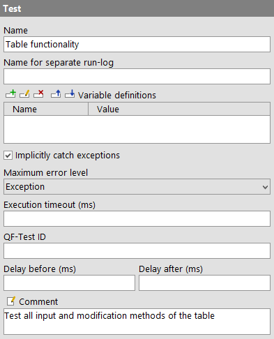

| Version 6.0.3 |
Those nodes have been replaced with other node types in the meantime. The nodes can still be executed but you shouldn't use them anymore.
|
|
Note Before QF-Test version 2 the 'Test' node was one of the main building blocks of a test-suite. It had a few shortcomings however: Its setup/cleanup structure was too linear and inflexible for complex scenarios and it was never clear whether a 'Test' node represented a logical test-case or was just used to implement some sequence. Thus 'Test' nodes have been replaced with 'Test-set' and 'Test-case' nodes. A 'Test' is a special 'Sequence' that executes extra setup and cleanup code before and after the execution of its child nodes to ensure that each of the children runs under similar conditions and to prevent unwanted side effects between the execution of one child and the next. To do so, a 'Test' has two special, optional child nodes besides its normal children, a 'Setup' as the first and a 'Cleanup' as the last node. With its 'Implicitly catch exceptions' attribute a 'Test' also offers special exception handling to prevent exceptions in one 'Test' from aborting a whole test-run. For special cases of data driven testing a 'Test' may also contain a 'Data driver', whereas such is typically done in combination with 'Test-sets' as described in chapter 20. That functionality can be achieved by using 'Test-step' nodes. For backwards compatibility and to ease transition from old-style 'Test' nodes to 'Test-set' and 'Test-case' nodes QF-Test treats nodes as a 'Test-set' or 'Test-case' for documentation and report if their place in the hierarchy allows it. In some cases 'Test' nodes have been treated as 'Test-step' nodes, e.g. if data-driven test-steps have been used. Old test-suites with a structure based on 'Test' nodes can by migrated to make use of the new features of 'Test-sets' and 'Test-cases'. To this end, right-click on a 'Test' node to bring up the context menu. If a transformation is allowed, QF-Test will offer to transform the 'Test' node into a 'Test-set', 'Test-case' or 'Test-step' node. 3.0+ It is possible to convert a whole hierarchy of 'Test' nodes to a hierarchy of 'Test-set' and 'Test-case' nodes by selecting the recursive conversion option in the popup menu. Note Both 'Test-set' and 'Test-case' nodes may contain 'Setup' or 'Cleanup' nodes for backwards compatibility. In a 'Test-set', these work just as in a 'Test': 'Setup' and 'Cleanup' are executed for each test contained in the 'Test-set'. In a 'Test-case' however, 'Setup' and 'Cleanup' are only run once at the beginning and end of its execution. If a 'Test-set' or 'Test-case' has both a 'Dependency' and 'Setup'/'Cleanup' nodes, the 'Dependency' will be executed first. 'Setup' and 'Cleanup' will have no impact on the dependency stack described in subsection 8.6.3. |
Contained in: All kinds of sequences.
Children: Optional 'Data driver' followed by an optional 'Setup' at the beginning, then any kind of executable nodes and an optional 'Cleanup' as last node.
Execution: The 'Variable definitions' of the 'Test' are bound. If there is a 'Data driver' node, it is executed to create a data driving context and bind one or more 'Data binders' for iteration over the determined data sets as described in chapter 20. For each of its normal child nodes, the 'Setup' is executed, then the child and then the 'Cleanup'. After the last execution of the 'Cleanup' is complete, the variables are unbound again.
Attributes:
|
|  | ||
|
| Figure 38.88: 'Test' attributes | ||
The name of a sequence is a kind of short description. It is displayed in the tree view, so it should be concise and tell something about the function of the sequence.
Variable: No
Restrictions: None
If this attribute is set it marks the node as a breaking point for split run-logs and defines the filename for the partial log. When the node finishes, the respective log entry is removed from the main run-log and saved as a separate, partial run-log. This operation is completely transparent, the main run-log retains references to the partial logs and is fully controllable. Please see subsection 7.1.5 for further information about split run-logs.
This attribute has no effect if the option Create split run-logs is
disabled or split run-logs are explicitly turned off for batch mode via the
-splitlog command line argument.
There is no need to keep the filename unique. If necessary, QF-Test appends a number to the filename to avoid collisions. The filename may contain directories and, similar to specifying the name of a run-log in batch mode on the command line, the following placeholders can be used after a '%' or a '+' character:
|
|
|
||||||||||||||||||||||||||||||||||
|
| Table 38.32: Placeholders for the 'Name for separate run-log' attribute | ||||||||||||||||||||||||||||||||||
Variable: Yes
Restrictions: None, characters that are illegal for a filename will be replaced with '_'.
This is where you define the values of the variables that remain bound during the execution of the sequence's child nodes (see chapter 6). See subsection 2.2.5 about how to work with the table.
Variable: Variable names no, values yes
Restrictions: None
When an exception is thrown during the execution of one of the 'Test's' normal child nodes, the 'Test' is usually terminated prematurely. This may not be what you want, since no information is gained from the execution of the rest of the child nodes.
If the 'Setup' and 'Cleanup' of the test are set up so you can guarantee the same initial conditions for each child node even in the case of an exception, you can set this attribute to make the 'Test' catch the exception implicitly. That way, if an exception is caught from a normal child node, the exception is logged and the execution of that child node is stopped. Then the 'Test' continues with the 'Cleanup' as if nothing had happened.
Exceptions thrown during the execution of either the 'Setup' or the 'Cleanup' cannot be caught that way and will always terminate the 'Test'
Variable: No
Restrictions: None
When a warning, error or exception occurs during a test run, the state of the corresponding node of the run-log is set accordingly. This state is normally propagated to the parent node in a way that ensures that the error state of a run-log node represents the worst of its child nodes' states. Using this attribute, the maximum error state that the run-log node for a sequence will propagate, can be limited.
Note This value has no effect on the way exceptions
are handled. It only affects the error states of the run-log nodes and
by that the exit code of QF-Test when run in batch mode
(see. section 1.7). It also has no effect on the
creation of compact run-logs (see command line argument
-compact). The node for a sequence in which a warning, error
or exception occurs is never removed from a compact log, even if the
error is not propagated due to the setting of this attribute.
Variable: No
Restrictions: None
Time limit for the node's execution in milliseconds. If that limit expires the execution of that node will get interrupted.
Variable: Yes
Restrictions: >= 0
When using the command line argument -test <n>|<ID> for execution in batch mode you can
specify the 'QF-Test ID' of the node as an alternative to its qualified name.
Variable: No
Restrictions: Must not contain any of the characters '\', '#', '$', '@', '&', or '%' or start with an underscore ('_').
These attributes cause a delay before or after the execution of the node. If a value is empty, the Default delay from the global options is used.
Variable: Yes
Restrictions: Valid number >= 0
Here you can enter a comment that explains the purpose of this node. This is the preferred way of documenting the test-suite.
Note
For detailed documentation, especially for 'Test-set', 'Test-case' or 'Procedure' nodes,
this text area might not be the right place. There are many excellent editors that are
much better suited to this task. The option External editor command lets you
define an external editor in which comments can be edited conveniently by pressing
[Alt-Return] or by clicking the  button.
button.
You can trigger a special behavior of some nodes using doctags, please see Doctags.
If you enter text in the comment field of a 'Component' node, the node will be considered as 'used' when you want to mark or delete unused components.
Variable: Yes
Restrictions: None
| Last update: 9/6/2022 Copyright © 1999-2022 Quality First Software GmbH |